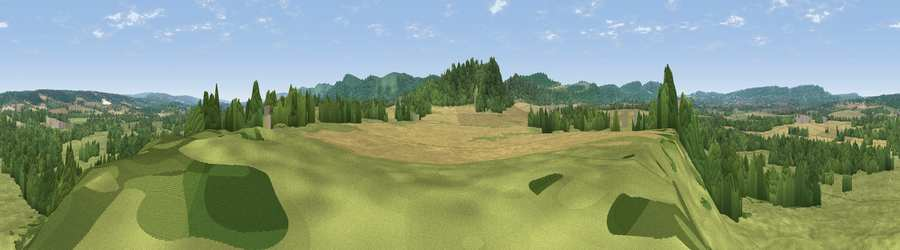

Viewpoint near South Harting
#36517 in England · top 54% of its area beats it · near South Harting · path 294 mWhere it is
The exact computed spot (SU 78175 21375). Click the marker for map links.
Public access: the nearest public right of way is about 294 m away — the final stretch may cross private land. Computed from Natural England's CRoW access layer and OpenStreetMap rights of way — not the legal definitive map. Always verify locally.
The view, rendered

A 360° render of this exact spot computed from the terrain model, tree cover and land cover — summer colours, afternoon light, calibrated against photographs of famous viewpoints. Real trees, hedges and buildings will differ in detail.
The panorama
Grey silhouette: terrain skyline in each direction (720 bearings, Earth curvature and refraction included). Dashed green: skyline with trees (+15 m) and buildings (+8 m) as obstacles. Blue strip: how far the ground is visible on each bearing.
Where the view opens
Wedge length = distance to the farthest visible ground on that bearing (vegetation-aware). Rings at 10, 25 and 50 km.
What fills the view
44% grassland · 34% woodland · 21% cropland ·
Angular shares of the visible panorama (visual magnitude), not map area. Landscape diversity 0.48 (0–1 Shannon).
Key numbers
More beautiful places nearby
The staircase of upgrades: each row has a higher view potential than everything closer. Driving times are estimates from straight-line distance, calibrated against real road routing — check an actual route before setting out.
| Place | Direction | Drive | Score |
|---|---|---|---|
| Torberry Hill | SSW · 1 km | ~3 min | 53.3 |
| Viewpoint near South Harting | SSW · 2 km | ~5 min | 58.1 |
| Harting Down | SSE · 3 km | ~8 min | 76.5 |
| Beacon Hill | SE · 4 km | ~9 min | 85.8 |
| Chanctonbury Ring | ESE · 37 km | ~56 min | 87.0 |
| Viewpoint near St. Lawrence | SSW · 50 km | ~71 min | 88.2 |
| Viewpoint near Niton | SSW · 54 km | ~75 min | 89.2 |
| Viewpoint near West Bexington | WSW · 128 km | ~152 min | 89.5 |
50.98648, -0.88763 · source: screening · position refined by local search. Computed location — check access rights before visiting.